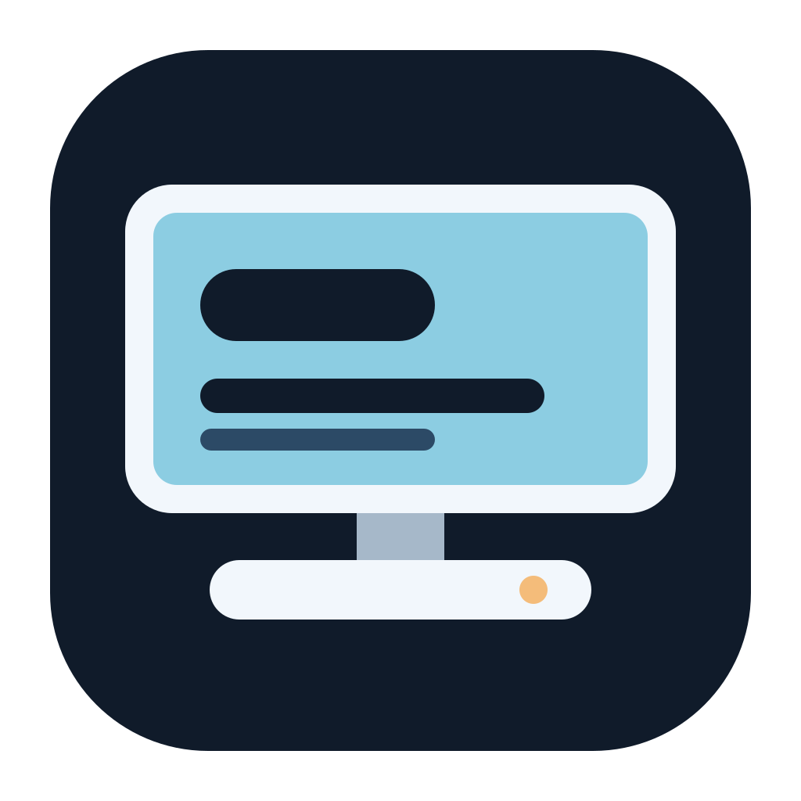

Room to see it clearly.
Large digits, strong contrast and a true fullscreen mode. Hide the app header, keep the menu bar, or strip things back to a quiet clock.

DocksideFor the screen on your desk dock
A clear clock, live Mac activity, a focus timer and the apps you choose. A native companion for Cabletime ScreenDock.
Developer preview · Intel + Apple silicon · macOS 14+ target
↓ 128 KB/s
↑ 12 KB/s
128 GB freeDashboard illustration. Your live readings will vary.
Large digits, strong contrast and a true fullscreen mode. Hide the app header, keep the menu bar, or strip things back to a quiet clock.
Choose the app behind each shortcut. Your calendar can be your calendar. Your notes can open where you already keep them.
Seven themes, three layouts, optional focus, widget visibility, clock sizing and connection setup. Change them from the dashboard or the Mac menu bar.
A small setup
The experimental native USB mode sends Dockside directly to the tested panel. The factory app remains available as a fallback.
Experimental native USB can run the Dockside dashboard with the factory app stopped. It is limited to the tested 1280 × 720 dock, uses a private macOS display API, and does not mirror other apps or the Mac menu bar. Keep the factory app installed as a fallback while evaluating this preview.
The universal build targets Intel and Apple silicon on macOS 14 or later. Local hardware testing is on macOS 27.0.1. Automated build and self-check jobs target macOS 15 and 26; see their current results on GitHub. Physical native USB testing is limited to this macOS 27 dock setup. Hardware behavior on older releases, other panels and sleep/wake remains unverified. Companion mode also needs a compatible vendor driver.
No. It asks macOS to prevent idle display sleep while Dockside runs. It does not adjust the panel’s brightness. Use the dock’s hardware brightness button.
Control Center checks public GitHub releases when you request it. Downloads and installation are manual. These developer-preview builds are ad-hoc signed and are not notarized public releases.
The source is public, but the project’s license is still undecided. No open-source reuse license has been granted yet. Feedback and bug reports are welcome.
No account. No telemetry. Update checks contact GitHub only when requested.